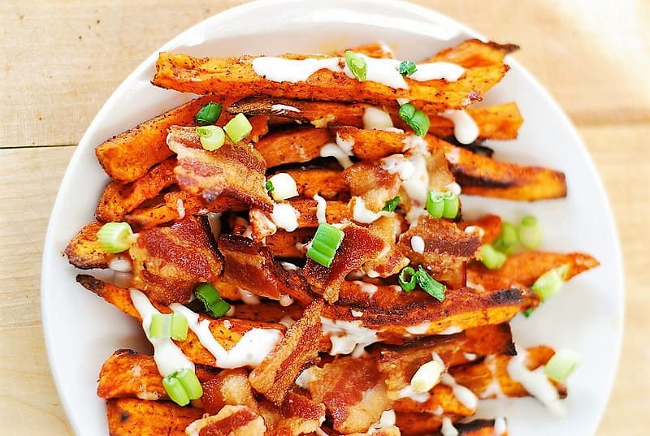
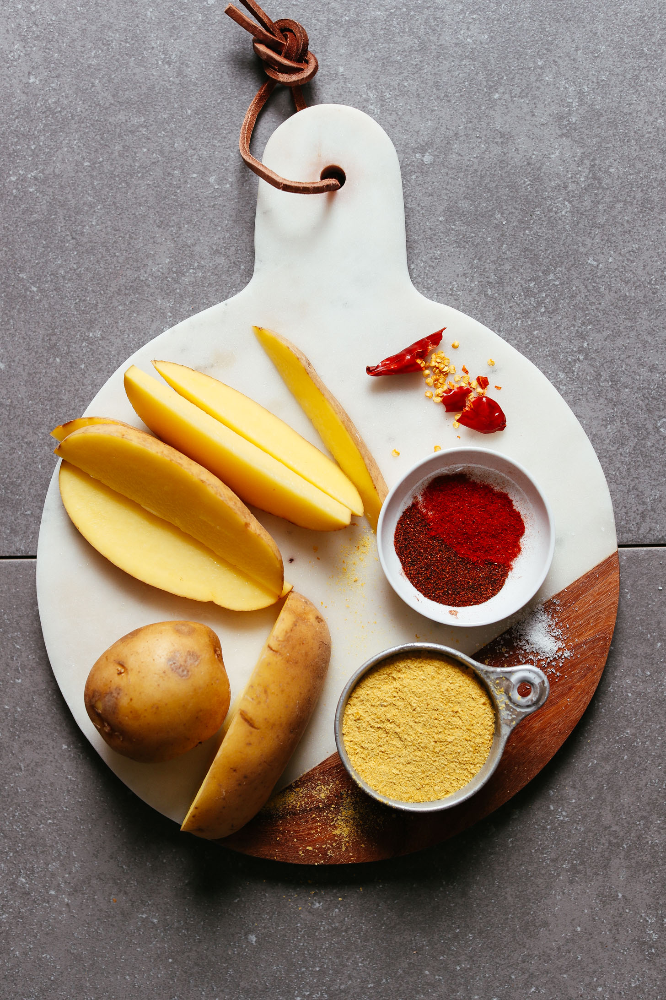

Description
Thinly sliced sweet potatoes are sprinkled with lots of spices,such as smoked paprika,chili powder,cayene pepper,cumin.Then, these sweet potato fries are baked in the oven.

Ingredients
- 3-4 medium-large sweet potatoes,cut into wedges.
- 3 tablespoons olive oil,or other cooking oil.
- 1 teaspoon salt.
- 1 teaspoon chili powder.
- 1 teaspoon garlic powder.
Directions
- Preheat the oven to 425 degrees F(220 degrees C).
- In a plastic bag,combine the sweet potatoes,canola oil,taco seasoning,and cayenne pepper.Close and shake the bag until the fries are evenly coated.Spread the fries out in a single layer on two large baking sheets.
- Bake for 30 minutes,or until crispy and brown on one side.Turn the fries over using a spatula,and cook for another 30 minutes,or until they are all crispy on the outside and tender inside.Thinner fries may not take as long.